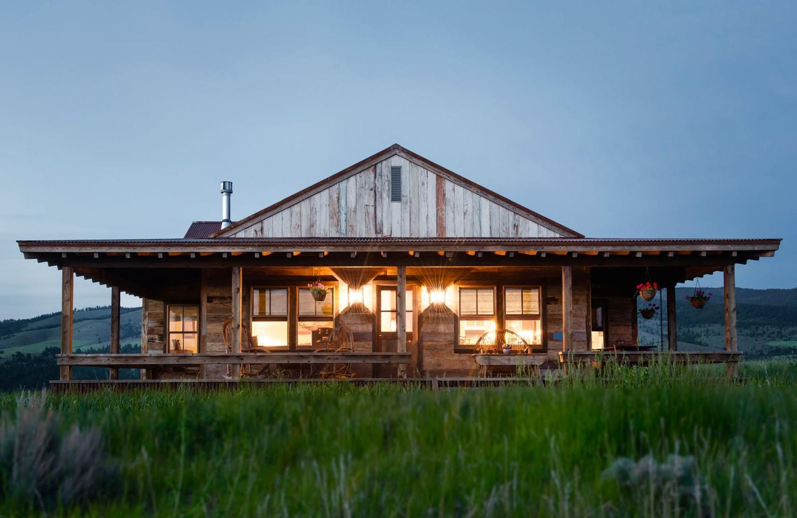
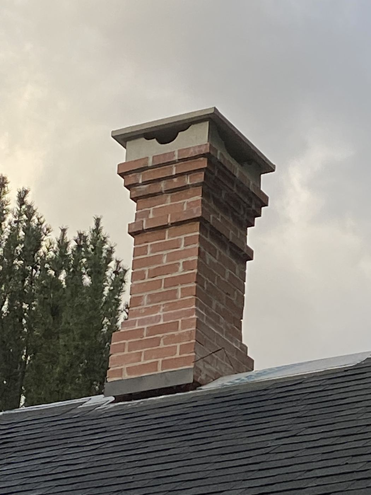

A look at projects completed around Hamilton, Stevensville, Corvallis, and the rest of the Bitterroot Valley — from full custom homes to a single hand-forged handrail.

A tired, dated exterior torn down to the studs and rebuilt with new dormers, a new roof, full rigid-foam insulation, and a finished stucco exterior with dark trim.
View project →
A shabby-chic custom home built almost entirely from 200-year-old reclaimed wood — starting with a guest cabin, then a full house to match.
View project →
A curb-appeal porch rebuild built around a hand-drafted three-centered arch — designed, drawn, and detailed in-house.
View project →
A start-to-finish kitchen addition — new foundation, framing, and roofline tied cleanly into an existing home.
View project →
A custom scrollwork handrail, hand-forged from raw steel stock in our own shop — not ordered from a catalog.
View project →
A cautionary chimney rebuild, plus a look at the everyday foundation, driveway, sidewalk, and flatwork we pour year-round.
View project →
Two tile jobs, start to finish: a full bathroom remodel and a kitchen floor upgrade.
View project →